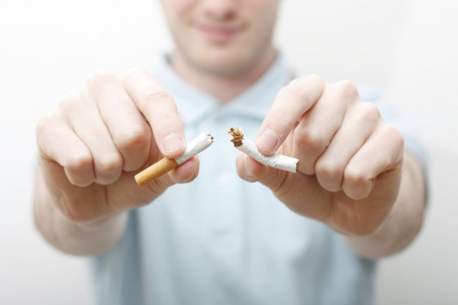

Рак и другие заболевания

Избавление от любой зависимости – серьезное испытание на прочность. Например, покончить с курением пытаются многие. И только часть из них доходит до цели. Какие эффективные методы нужно использовать, чтобы приблизить себя к заветной цели и избавиться от никотиновой зависимости?
Согласно статистике, около 70% курильщиков мечтает о том, чтобы избавиться от своей вредной привычки. Менее 20% из них никогда ранее не пробовали бросить курить, но 80% регулярно предпринимает попытки борьбы с пагубной зависимостью. Как бросить курить самостоятельно, необходимо знать каждому курильщику, желающему стать на путь здорового образа жизни.
Каковы причины курения
У каждого человека имеются свои собственные причины, подталкивающие его к курению. Но большинство начинает курить в юном возрасте только из-за того, чтобы влиться в компанию курящих сверстников. Создается впечатление, что с раскуренной сигаретой придет дружба, понимание и веселье. Поскольку со временем происходит привыкание организма к действию никотина, возникает желание в регулярном восполнении недостающих ощущений, поэтому курильщик увеличивает количество выкуренных сигарет в день. Но даже это уже не приносит такого удовольствия, поскольку на фоне временной эйфории возникают первые проблемы со здоровьем (кашель, отдышка, головокружение, слабость), которые не остаются незамеченными.
Человек выкуривает сигарету на остановке в ожидании автобуса, в ожидании звонка, между выполненной работой, за разговором с приятелем – просто для того, чтобы себя чем-то занять. Некоторые не предпринимают попыток отказаться от курения из-за страха остаться в одиночестве. Когда курят все знакомые и друзья, не хочется «выбиваться» из компании и становится «белой вороной», иначе они не поймут. Лучше остаться в стороне, чем в результате привычки поддерживать компанию получить рак легких. Но тут каждый для себя должен решить сам, что ему важнее: мгновенное удовольствие или жизнь без риска развития множества болезней.
Как настроить себя, чтобы бросить курить
Нужно понять, что с сигаретами вы ничего не приобретаете, а только теряете свое здоровье, красоту, молодость. Отказавшись от них, вы совсем ничего не потеряете. Неужели вы не хотите увидеть, как будут расти ваши дети, взять на руки внуков и станцевать на их свадьбе? С каждой выкуренной сигаретой ваш шанс до этого дожить становится все меньше.
С чего начать бросать курить:
- Твердо решите сделать это прямо сейчас. Нет больше никаких отговорок: ни завтра, ни с понедельника, ни с нового года, а прямо сейчас.
- Сообщите своим родным и близким о вашем намерении. Попросите у них поддержки и помощи. Здорово будет, если с вами решится бросить курить еще кто-то, так вы поддержите друг друга.
- Избавьтесь от всех атрибутов курения вокруг вас: пепельницы, зажигалки, кофта, в которой вы выходили на перекур или подушечка, на которой вы сидели на балконе, затягиваясь табачным дымом. Всем этим вещам больше не место в вашей жизни, отправьте их в мусорный бак.
- Посчитайте, сколько вы в месяц тратите денег на сигареты. Отложите эту сумму в конверт и запрячьте подальше. В конце первого месяца без курения достаньте эту заначку и купите себе подарок, вознаградите себя за пройденный путь. И так поступайте каждый месяц жизни без зависимости.
Основные способы борьбы с курением
Легкий и доступный способ бросить курить – это прекратить курить и все. Но некоторым людям самостоятельно справиться с зависимостью тяжело, поэтому они находят дополнительные способы, помогающие перебороть последствия отказа от табака. Чтобы снизить эффект абстинентного синдрома при отказе от табака, воспользуйтесь никотиновыми пластырями. При их применении в организм поступает никотин, но легкие не подвергаются негативному воздействию дыма. Правда, сердечно-сосудистая система все же страдает от действия никотина. Поэтому приклеивание пластыря – это только временный этап, пока не пропадет желание курить. По такому же принципу работает никотиновая жевательная резинка. Ее необходимо медленно разжевывать во рту, удерживая слюну, а затем глотать. Существуют и специальные ингаляторы с содержанием никотина. При возникновении желания затянуться сигаретой, нужно сделать около 80 вдохов через ингалятор. Так в организм поступит необходимая доза уже чистого никотина.
Основной этап
Задача данного этапа — перебороть острое желание закурить. Обычно оно длится не более 5-10 минут. Для этого предлагается:
- Применять тактику альтернативного поведения, если желание закурить вызвано чем-то, что раньше ассоциировалось с сигаретами.
- Отвлекаться, заняться любимым делом, почитать книгу, поиграть в компьютерную игру и т.п.
- Занять чем-нибудь руки, например, составлять паззлы или вязать.
- Сделать несколько физических упражнений. Глубоко подышать: расслабиться, медленно, расправив плечи, набирать полную грудь воздуха, задержать дыхание на минуту, медленно выдохнуть. Проделать 5 раз.
- Пожевать жевательную резинку, пососать конфету или выпить воды (особенно полезен зеленый чай).
- Съесть яблоко или какой-нибудь другой фрукт.
- Принять душ или ванну, это поможет расслабиться.
- Почистить зубы.
- Прополоскать рот раствором соды.
Избегайте мест, где курят и наоборот, ходите туда, где курение запрещено. Первые два месяца полезно принимать горячие ванны и посещать баню. Пейте больше жидкости лучше всего соки и минеральную воду. В течение первых двух недель откажитесь от алкоголя, кофе, острой и соленой пищи все это провоцирует желание курить. Больше ешьте овощей и фруктов. Займитесь физкультурой, но помните, что чрезмерные нагрузки опасны для курильщиков. Эксперты рекомендуют воздержаться от диеты во время отказа от курения, поскольку очень трудно выдержать два таких испытания одновременно.
Дополнительные способы бросить курить которые, по данным научных экспериментов, действительно работают.
Заместительная терапия
Самым распространенным из них является замена курения применением никотиносодержащих средств. Это никотиновые пластыри, жевательные резинки, ингаляторы. При этом эффект никотина сохраняется, однако в организм больше не поступают содержащиеся в табачном дыму токсины. Эти средства можно применять достаточно долго, пока тяга к сигаретам не пропадет. Никотиновый пластырь наклеивается на плечо или бедро один раз в день и обеспечивает поступление в организм определенной дозы никотина через кожу. Каждые три недели пластырь меняется на более слабый. Никотиновая жевательная резинка обеспечивает поступление никотина через слизистую оболочку рта. Ее недостатком является неприятный для некоторых вкус и необходимость долго, около 30 минут, жевать её. Никотиновый ингалятор по форме напоминает сигарету и позволяет вдыхать никотин. Поскольку его применение имитирует курение сигареты, то злостным курильщикам он может показаться более эффективным. Таблетки от курения имеет смысл применять только «заядлым» курильщикам.
Ведение дневника
Еще одна неплохая визуальная сопровождающая отказ от курения — дневник. Как и любые ограничительные действия по отношению к организму, отказ от никотина (а также сахара или кофеина) представляет собой серьезный стресс. Чтобы снизить дискомфорт и предотвратить срывы, на первом этапе будет полезно записывать, сколько раз в день вы курите и сколько сигарет выкуриваете в целом.
Социальные сети
Здорово, если у вас есть друг, который бросил курить. Тогда задать возникающие по ходу вопросы или обратиться за поддержкой (а она вам понадобится) можно будет в любое время. С другой стороны, не менее успешным оказывается подключение к операции своих виртуальных друзей. А между тем, они с радостью дадут совет и обсудят с вами варианты отклонения от изначального плана. Кроме того, психологи подтверждают, что громкие заявления в социальных сетях вроде «с сегодняшнего дня я бросаю курить» или «с завтрашнего дня я не ем сахар», конечно, увеличивают социальное давление.
Тренировки
Приступы острого желания покурить в случае отказа от курения, как правило, ограничены во времени. Обычно они длятся от 5 до 10 минут, и эксперты отмечают, что самое главное здесь — чем-то себя занять. Тяга застала на работе? Ничего страшного. Отправляйтесь на прогулку или, если времени нет и погода не располагает, пройдитесь по офису, чтобы узнать, как дела у ваших коллег. Примите во внимание и то, что, по данным некоторых исследований, поднятие тяжестей помогает бросить курить быстрее, чем кардио-нагрузки. Так что, вполне возможно, вам стоит временно изменить тип тренировок и поработать с весом.
Альтернативные методы
К альтернативным методам лечения никотиновой зависимости относятся иглотерапия (рефлексотерапия) и гипноз. При иглотерапии иголки вводятся в ушную раковину, воздействуя на определенные структуры головного мозга. В результате разрушается «рефлекс курильщика». Метод гипноза заключается в том, что, доведя пациента до состояния релаксации, врач внушает, что ему противно курение. Надеемся, что вышеизложенная информация окажется полезной в осуществлении Ваших намерений бросить курить.